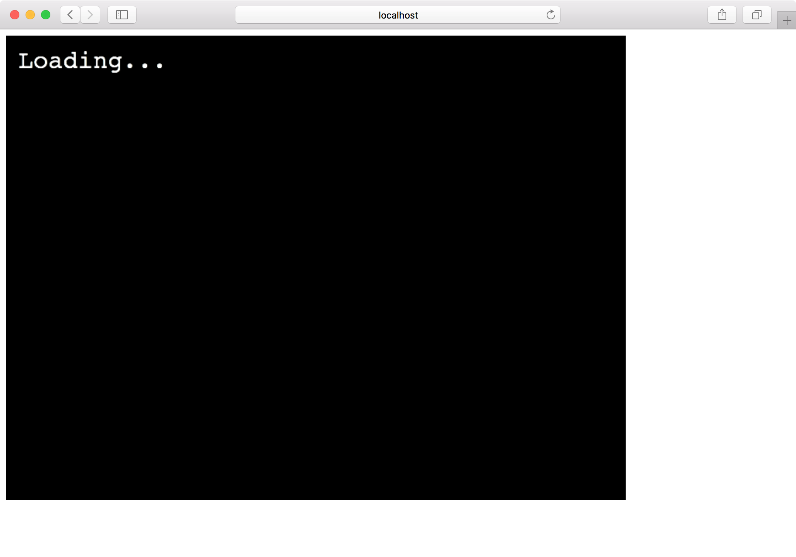

複数のシーン
これまで作ったゲームは1つのシーンしかありませんでしたが、通常ゲームはタイトル・プレイ・結果など複数のシーンで構成されます。
今回はPhaserに2つのシーンを登録し、遷移させてみます。
いつも通りプロジェクトを作成します。
$ git clone git@github.com:tnantoka/hello-phaser-webpack.git phaser-scenes
$ cd phaser-scenes
$ yarn install
シーンを入れるディレクトリを用意します。
$ mkdir src/scenes
src/scenes/LoadingScene.jsにローディング表示するシーンを作ります。
export default class LoadingScene extends Phaser.Scene { constructor() { super('Loading') } create() { this.add.text(16, 16, 'Loading...', { fontSize: '32px', fill: '#fff' }); setTimeout(() => { this.scene.start('Game'); }, 5000); } }
constructorではそのシーンの識別子となる情報をsuperに渡します。
createはこれまでconfigのsceneに与えていたcreateと同じく、シーン作成時に行われる処理です。
ここではLoading...を表示して5秒後にGameとキーを持つシーンを呼び出しています。
src/scenes/GameScene.jsにゲームプレイ用のシーンを作ります。（といっても文字を表示するだけですが）
export default class GameScene extends Phaser.Scene { constructor() { super('Game') } create() { this.add.text(16, 16, 'Game Start!', { fontSize: '32px', fill: '#fff' }); } }
これらをsrc/index.jsから利用します。
まずはインポートします。
import LoadingScene from './scenes/LoadingScene'; import GameScene from './scenes/GameScene';
そして、configに配列として渡します。
（クラス外に定義してあるpreloadやcreateは使わないので消してしまっても大丈夫です。）
scene: [LoadingScene, GameScene],
これで複数シーンで構成されるゲームになりました。

ソースコードはこちらです。